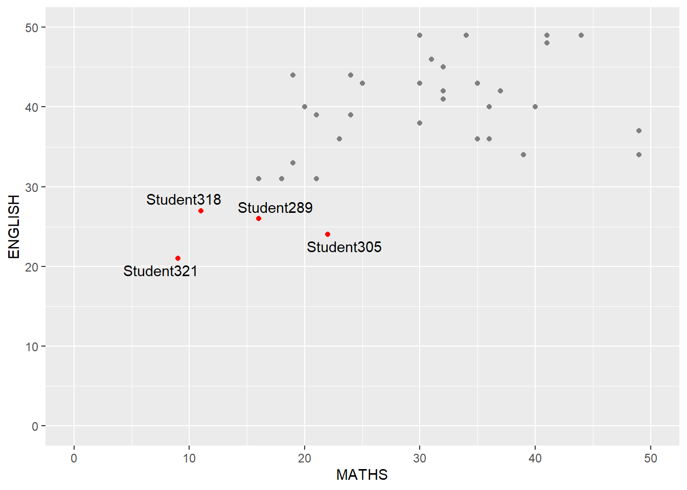

Show the code
pacman::p_load(tidyverse, ggrepel, patchwork, ggthemes, hrbrthemes)Goh Si Hui
January 13, 2024
January 22, 2024
In this exercise, we will be introduced to the following ggplot2 extensions to create more elegant and effective statistical graphics:
ggrepel: allows us to control the placement of annotation on a graph
ggthemes and hrbrthemes: allows us to create professional publication quality figures
patchwork: allow us to plot composite figure by combininig ggplot2 graphs
Before we start, let us ensure that the required R packages have been installed and import the relevant data for this hands-on exercise.
For this exercise, other than tidyverse, we will use the following packages:
ggrepel: an R package that provides geoms for ggplot2 to repel overlapping text labels
ggthemes: an R package that provides extra themes, geoms and scales for ggplot2.
hrbrthemes: an R package that providestypography-centric themes and theme components for ggplot2
patchwork: an R package for preparing composite figures created using ggplot2.
The code chunk below uses p_load() of pacman package to check if the abovementioned packages are installed in the computer. If they are, they will be launched in R. Otherwise, pacman will install the relevant packages before launching them.
Note that pacman package has already been installed before using the above code chunk. If you have not yet installed pacman please install it via Rstudios’ “Tools” > “Install Packages” before using the above code chunk.
For this exercise, we will be using the Exam_data provided by the course instructor.It consists of year end examination grades of a cohort of primary 3 students from a local school. It is in csv file format.
We use read_csv() function of readr to import the Exam_data csv file into R then we will use glimpse() of dplyr to learn about the associated attribute information in the dataframe.
Rows: 322
Columns: 7
$ ID <chr> "Student321", "Student305", "Student289", "Student227", "Stude…
$ CLASS <chr> "3I", "3I", "3H", "3F", "3I", "3I", "3I", "3I", "3I", "3H", "3…
$ GENDER <chr> "Male", "Female", "Male", "Male", "Male", "Female", "Male", "M…
$ RACE <chr> "Malay", "Malay", "Chinese", "Chinese", "Malay", "Malay", "Chi…
$ ENGLISH <dbl> 21, 24, 26, 27, 27, 31, 31, 31, 33, 34, 34, 36, 36, 36, 37, 38…
$ MATHS <dbl> 9, 22, 16, 77, 11, 16, 21, 18, 19, 49, 39, 35, 23, 36, 49, 30,…
$ SCIENCE <dbl> 15, 16, 16, 31, 25, 16, 25, 27, 15, 37, 42, 22, 32, 36, 35, 45…From the output from glimpse(), we note that:
There are a total of seven attributes in the exam_data tibble data frame.
Four of these attributes are categorical data: ID, CLASS, GENDER and RACE .
Three of these attributes are continuous data: MATHS, ENGLISH and SCIENCE.
We will use the summarize()to get the summary statistics of the continuous data: MATHS, ENGLISH and SCIENCE.
In Hands-on Exercise 1, I used the summary() function of Basic R package to calculate the summary statistics for the continous attribute in the exam_data dataset. For this exercise, I used the summarize() function of dplyr package. While the dplyr package requires more codes to calculate the summary statistics as compared to the summary() function, it offers more flexibility and also returns a tibble dataframe. Hence, whether to use summary() or summarize() depends on user preference and what we want to do with the output.
As mentioned in my Post-Lesson Thoughts 1, annotations are important to get user attention and also helps in our data storytelling. However, one of the challenges in plotting a statistical graph is annotation when we have a large number of data points.
The following chart is an example:
The overwhelming number of labels has blocked most of the data points!
ggrepel is an extension of ggplot2 package. It provides geoms of ggplot2 to repel overlapping text by replacing geom_text() with geom_text_repel() and replacing geom_label() with geom_label_repel().
Let us try it for the above chart!
In the above output, we end up with only 5 labelled points, even though we did not limit or specify the number of labels. This is because ggrepel will discard some text labels if they overlap too many other things (default limit is 10). So if a text label overlaps 10 other text labels or data points, then it will be discarded.
We can expect to see a warning if some data points could not be labeled due to too many overlaps.
Set max.overlaps = Inf to override this behavior and always show all labels, regardless of whether or not a text label overlaps too many other things.
Use options(ggrepel.max.overlaps = Inf) to set this globally for your entire session. The global option can be overridden by providing the max.overlaps argument to geom_text_repel().
There are other exciting customisations that we can do for ggreply. Here are some examples that I think will be useful for my personal work.
t For example, we only want to label and highlight those students who score less than 30 for both English and Maths amongst those students who score less than 50 for both English and Maths (assuming 50 is the passing score), we will: 1. Subset the tibble dataframe to contain only those who did not meet the passing score of English and Maths. 2. Create a new column to set the IDs of those students who score more than 30 for English and Maths to an empty string “” to hide them, and those who score less than 30 for both English and Maths would show their ID. 3. Then we plot the scatterplot using geom_point and also indicate to color those points with students who score less than 30 for both English and Maths in red.
exam_data2 <- subset(exam_data, MATHS < 50 & ENGLISH < 50)
exam_data2$ID_select <- ifelse(exam_data2$MATHS <30 & exam_data2$ENGLISH <30, exam_data2$ID, "")
ggplot(exam_data2,
aes(MATHS, ENGLISH, label = ID_select)) +
geom_text_repel() +
geom_point(color = ifelse(exam_data2$MATHS < 30 & exam_data2$ENGLISH < 30, "red", "grey50"))+
coord_cartesian(xlim = c(0,50),
ylim = c(0,50))
We can use stat_summary() with geom = “text_repel”. The position_nudge_repel() function nudges the text label’s position, but it also remembers the original position of the data point.
ggplot(exam_data, aes(factor(CLASS), MATHS)) +
stat_summary(
fill = "darkseagreen",
color = "black",
fun = "mean",
geom = "col") + stat_summary(
aes(label = round(stat(y))),
fun = "mean",
geom = "text_repel",
min.segment.length = 0,
position = position_nudge_repel(y = -2)) +
labs(title = "Mean Maths Scores Across Classes")You can learn more about ggrepel here!
As seen in Hands-on Exercise 1, ggplot2 comes with eight built-in themes:
theme_gray()
theme_bw()
theme_classic()
theme_dark()
theme_light()
theme_linedraw()
theme_minimal()
theme_void()
Here are some examples of the ggplot2 themes
ggplot(exam_data,
aes(x = MATHS)) +
geom_histogram(bins=20,
boundary = 100,
color = "black",
fill = "darkslategrey") +
geom_vline(aes(xintercept=mean(MATHS)),
color="deepskyblue", linetype="dashed", size=0.7)+
annotate("text",
x = mean(exam_data$MATHS),
y = 40,
label = paste("Mean=", round(mean(exam_data$MATHS))),
col = "black") +
theme_minimal() +
ggtitle("Distribution of Maths Scores")ggplot(exam_data,
aes(x = MATHS)) +
geom_histogram(bins=20,
boundary = 100,
color = "black",
fill = "darkslategrey") +
geom_vline(aes(xintercept=mean(MATHS)),
color="deepskyblue", linetype="dashed", size=0.7)+
annotate("text",
x = mean(exam_data$MATHS),
y = 40,
label = paste("Mean=", round(mean(exam_data$MATHS))),
col = "black") +
theme_light() +
ggtitle("Distribution of Maths Scores")ggthemes provides ggplots2 with themes that replicate the look of plots by Edward Tufte, Stephen Few, Fivethirtyeight, The Economist, ‘Stata’, ‘Excel’, and The Wall Street Journal, among others.
ggplot(exam_data,
aes(x = MATHS)) +
geom_histogram(bins=20,
boundary = 100,
color = "black",
fill = "darkslategrey") +
geom_vline(aes(xintercept=mean(MATHS)),
color="deepskyblue", linetype="dashed", size=0.7)+
annotate("text",
x = mean(exam_data$MATHS),
y = 40,
label = paste("Mean=", round(mean(exam_data$MATHS))),
col = "black") +
theme_economist() +
ggtitle("Distribution of Maths Scores")ggplot(exam_data,
aes(x = MATHS)) +
geom_histogram(bins=20,
boundary = 100,
color = "black",
fill = "darkslategrey") +
geom_vline(aes(xintercept=mean(MATHS)),
color="deepskyblue", linetype="dashed", size=0.7)+
annotate("text",
x = mean(exam_data$MATHS),
y = 40,
label = paste("Mean=", round(mean(exam_data$MATHS))),
col = "black") +
theme_solarized() +
ggtitle("Distribution of Maths Scores")hrbrthemes package provides a base theme that focuses on typographic elements, including where various labels are placed as well as the fonts that are used.
ggplot(exam_data,
aes(x = MATHS)) +
geom_histogram(bins=20,
boundary = 100,
color = "black",
fill = "darkslategrey") +
geom_vline(aes(xintercept=mean(MATHS)),
color="deepskyblue", linetype="dashed", linewidth=0.7)+
annotate("text",
x = mean(exam_data$MATHS),
y = 40,
label = paste("Mean=", round(mean(exam_data$MATHS))),
col = "black") +
ggtitle("Distribution of Maths Scores") +
theme_ipsum_rc()ggplot(exam_data, aes(MATHS, ENGLISH)) +
geom_point(color = ft_cols$yellow, show.legend = FALSE) +
labs(title="Maths Scores Versus English Scores for Primary 3 Students",
subtitle = "Passing Score for Maths and English is 50 marks",
caption = "VAA Hands-on Exercise 2")+
geom_vline(aes(xintercept=50, color=ft_cols$peach), show.legend = FALSE) +
geom_hline(aes(yintercept=50, color=ft_cols$peach), show.legend = FALSE)+
coord_cartesian(xlim = c(0,100),
ylim = c(0,100)) +
theme_ft_rc(font_rc)When trying out this section I encountered error messages stating that I do not have the font family in Windows font database.
So here’s what I have tried:
Install the fonts from hrbrthemes folder (found in “R” folder’s “library” folder) but that did not work.
So I found some websites stating that I should import_roboto_condensed() first and also install the fonts on my system before trying to use this theme. So I imported all the fonts needed for hrbrtheme and this method works for me!
The second goal centers around productivity for a production workflow. In fact, this “production workflow” is the context for where the elements of hrbrthemes should be used.
A “production workflow” is when you intend for the output of your work to be put into a publication of some kind, whether it be a blog post, academic paper, presentation, internal report or industry publication. When you’re cranking through an analysis, the visual elements don’t need to be perfect. They are there to validate/support your work and are more of a starting point for the finished product than anything else. The level of attention to detail on the final graphical products can be a great motivator for your audience to either dive deep into your analysis text or relegate it to the TLDR pile.
Sounds like hrbrtheme package has its own ideas and views on what makes an effective and visually appealing chart! Read more about why they chose certain fonts here!
Let us try to explore more about hrbrthemes using the following code chunk.
ggplot(exam_data, aes(MATHS, ENGLISH)) +
geom_point(color = ft_cols$yellow, show.legend = FALSE) +
labs(title="Maths Scores Versus English Scores for Primary 3 Students",
subtitle = "Passing Score for Maths and English is 50 marks",
caption = "VAA Hands-on Exercise 2")+
geom_vline(aes(xintercept=50, color=ft_cols$peach), show.legend = FALSE) +
geom_hline(aes(yintercept=50, color=ft_cols$peach), show.legend = FALSE)+
coord_cartesian(xlim = c(0,100),
ylim = c(0,100)) +
theme_ft_rc(plot_title_size = 15,
subtitle_size = 10,
axis_title_size = 10,
caption_size = 10,
base_size = 10,
plot_margin = margin(10,10,10,10),
grid = "Y") theme_ft_rc means
plot_title_size argument decreased the font size of the chart title from 18 (default) to 15subtitle_size argument decreased the font size of the subtitle from 13 (default) to 10axis_title_size argument increased the font size of the axis title from 9 (default) to 10caption_size argument increased the font size from 9 (default) to 10base_size argument decreased the default axis label from 11.5 (default) to 10plot_margin argument narrowed the margins of all 4 sides from 30 (default) to 10.grid argument removed the x-axis grid linesFor more details on the arguments of the theme, take a look here!
Sometimes we need to use multiple graphs to tell a compelling visual story. There are several ggplot2 extensions that provide functions to create figures with multiple graphs such as grid.arrange() of gridExtra package and plot_grid() of cowplot package.
In this section, we will learn how to create composite graphs using a ggplot2 extension called patchwork, which is sepcially designed for combining separate ggplot2 graphs into a single figure.
First, let us create three statistical graphics using the following code chunks.
p1 <- ggplot(exam_data,
aes(x = MATHS)) +
geom_histogram(bins=20,
boundary = 100, color = ft_cols$gray) +
coord_cartesian(xlim=c(0,100))+
labs(x = "Maths Scores", y = "Number of Students",
title = "Distribution of Maths Scores")+
theme_ipsum_rc(axis_title_size = 10,
plot_title_size = 12,
plot_margin = margin(10,10,10,10),
grid = "Y")
p1p2 <- ggplot(exam_data,
aes(x = ENGLISH)) +
geom_histogram(bins=20,
boundary = 100, color = ft_cols$gray) +
coord_cartesian(xlim=c(0,100))+
labs(x = "English Scores", y = "Number of Students",
title = "Distribution of English Scores")+
theme_ipsum_rc(axis_title_size = 10,
plot_title_size = 12,
plot_margin = margin(10,10,10,10),
grid = "Y")
p2p3 <- ggplot(exam_data,
aes(x = MATHS, y = ENGLISH)) +
geom_point() +
geom_smooth(method = lm,
size = 0.5) +
coord_cartesian(xlim=c(0,100),
ylim= c(0,100))+
labs(x = "Maths Scores", y = "English Scores",
title = "English Scores versus Maths Scores") +
theme_ipsum_rc(axis_title_size = 10,
plot_title_size = 12,
plot_margin = margin(10,10,10,10),
grid = "Y")
p3Patchwork package has a very simple syntax where we can create layouts super easily. Here’s the general syntax:
We can create two-Column Layout side by side using the Plus Sign +.
Parenthesis () to create a subplot group.
We can stack two charts on top of each other (i.e., Two-Row Layout) using the Division Sign /.
We can place subplot groups or two charts side by side using the Pipe sign |.
The figure in the tabset below shows a composite of two histograms created using patchwork. Note how simple the syntax used to create the plot!
In the code chunk we below, we use tThe pipe sign | will place subplots group (i.e. p1 and p2 next to another plot (i.e. p3) while the division sign / will place p1 and p2 on top of each other.
In order to identify subplots in text, patchwork also provides auto-tagging capabilities as shown below.
Besides providing functions to place plots next to each other based on the provided layout, with inset_element() of patchwork, we can place one or several plots or graphic elements freely on top or below another plot.
We can also add a theme from ggtheme to the output created from patchwork, as shown in the code chunk below.
In this hands-on exercise, we explored ggplot2 extensions:
how to make use of ggrepel to control the placement of annotations on a graph;
how ggthemes and hrbrthemes allow us to create publication-quality figures; and
how we can create composite figures using patchwork to combine ggplot2 graphs.
There are also many more interesting ggplot2 extensions to explore here so that we can create more effective, informative and elegant charts.